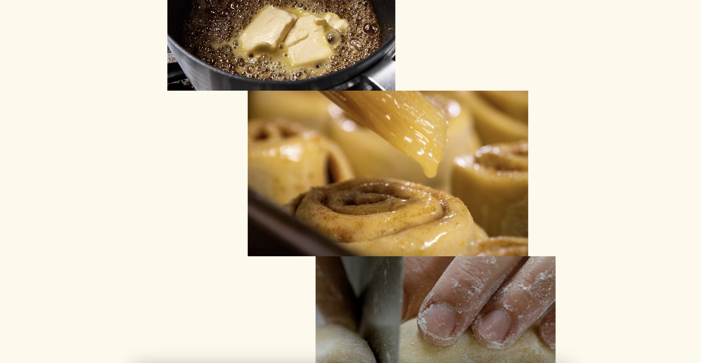
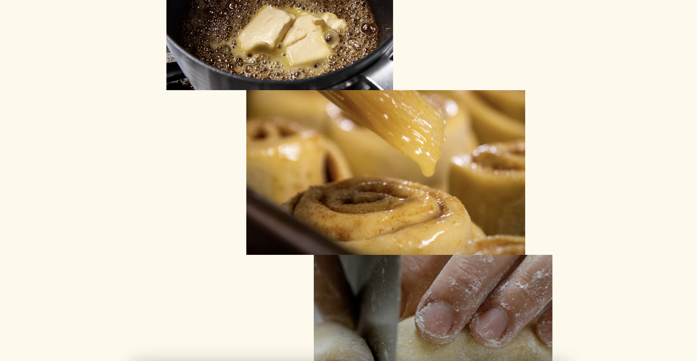

Servicios
Diseño web
Comunicación de marca
Estrategia sostenible
Identidad visual
Industria
Gastronomía y estilo de vida
Ubicación
Milán, Italia
Análisis:
Savor
Savor.it busca expresar sostenibilidad y minimalismo mediante una estética limpia y tipografía sans-serif. Su primera impresión es elegante y ordenada, pero los errores de carga y la falta de jerarquía visual interrumpen la experiencia. La ausencia de microinteracciones y la escasa narrativa sensorial debilitan el vínculo emocional con el usuario.
Desde lo técnico, el sitio presenta deficiencias en accesibilidad, semántica y rendimiento general. Aunque su discurso visual coincide con los valores sostenibles que promueve, la ejecución carece del rigor necesario para generar credibilidad. Su minimalismo se convierte en un límite cuando no se acompaña de estructura sólida y control visual.
 


Conclusión
Críticamente, el proyecto evidencia cómo la estética por sí sola no garantiza una experiencia inclusiva. Su estilo atrae a un público afín al diseño contemporáneo, pero deja fuera a quienes buscan interacción o calidez. No hay efectos injustificados, pero sí una desconexión entre intención y resultado. Reforzar accesibilidad y jerarquía informativa elevaría su coherencia ética y comunicativa.